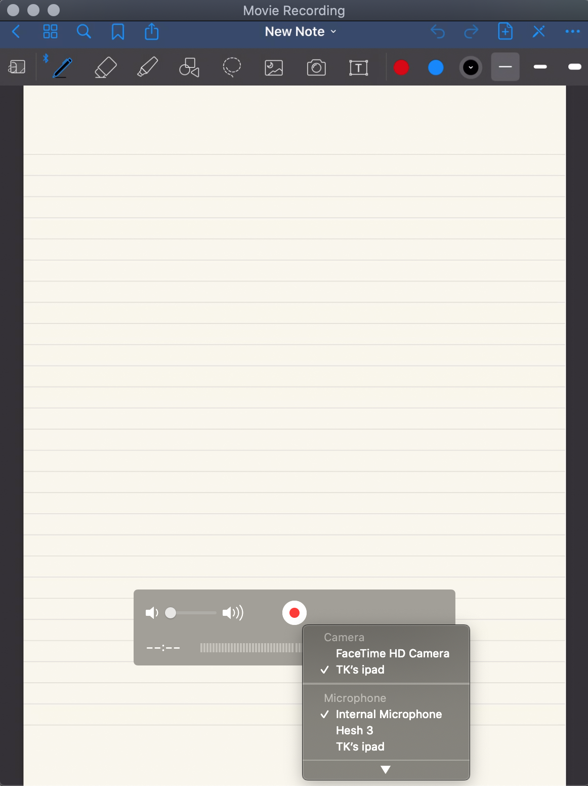

01本文
Google Meet (Meet)を使ってミーティングを行う際に、音声・ビデオはmacを使いたいが、リアルタイムでiPadの画面（ノート上で実際に計算するなど）の共有も同時に行いたい場合がある。この場合、以下の方法がある。
- iPad側で直接 Meetに参加する
- iPadの画面をQuickTime Playerで録画状態にすることで、共有する
１つ目の方法が最も安直であるが、iPad側のマイクは調整ができないようなのでmac側の音を拾ってハウリングをおこす（外付けmicを使っていれば問題はない）。
QuickTime Playerでは、USBで接続中のiPadをカメラとして使用することができる。２つ目の方法では、QuickTime Player上でiPadの画面をmac上で録画状態にしつつ、その録画画面をMeetに共有する方法である。mac側でQuickTime Playerを起動し、Fileから"New Movie Recording"をクリックする。

録画ボタンの隣のタブから、iPadを選択することでQuickTime Playerでの録画待機状態になる。録画待機状態（実際に録画を開始する必要はないです）で、MeetでQuickTime Playerのウインドウ共有を行えば、リアルタイムでのiPad画面の共有が可能である。
Zoomを使えばこのような共有は何も考えずに出来るものの、Zoomが使えない場合というのもあるのです。Meetの方が予定や会議の立てやすさ含め、ちょっと都合も良かったりするのだけど。